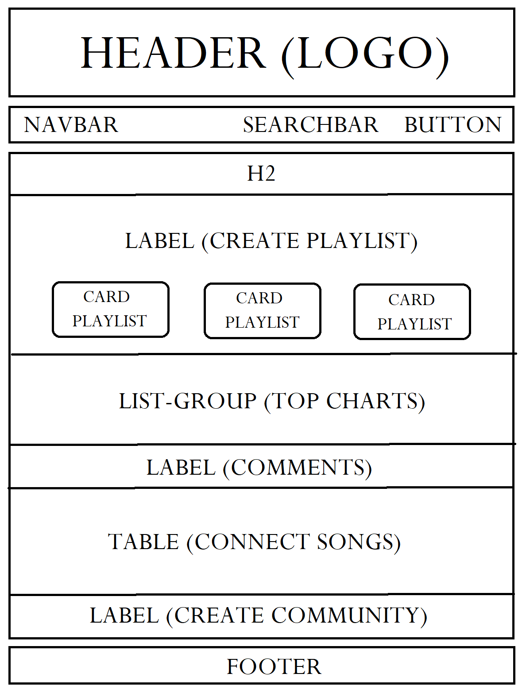
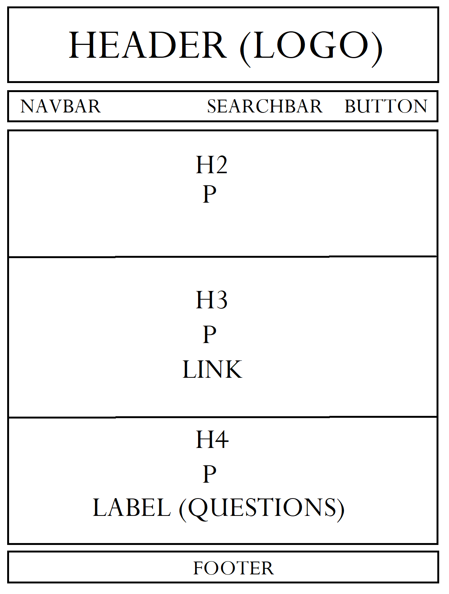
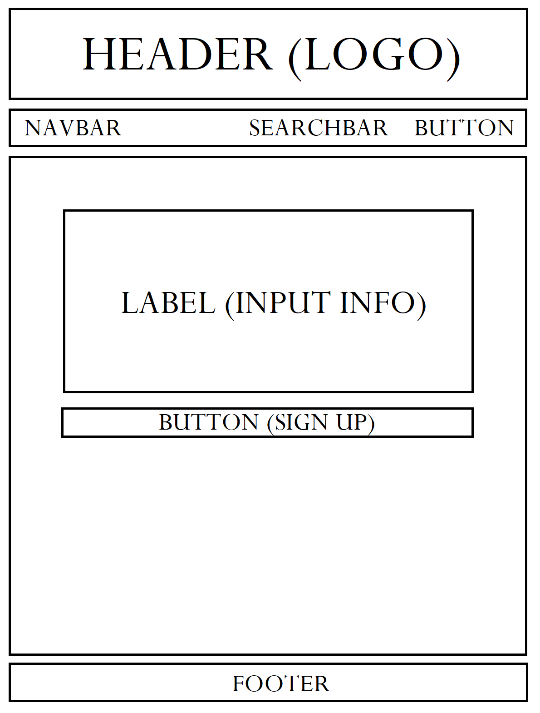

Uno degli argomenti che unisce maggiormente le persone è la musica, per questo nasce HighVolume, un sito con l’intento di portare le persone a socializzare attraverso canzoni e artisti preferiti. HighVolume si rivolge ai giovani amanti della musica, che cercano nuovi e facili metodi per relazionarsi. Al momento esistono più che altro siti di ricerca di canzoni, con poche attività di interazione e connessione. Pertanto, HighVolume cerca di colmare questa mancanza grazie a diversi strumenti di condivisione (quali commenti e riproduzione simultanea tra amici) per trovare punti in comune tra persone e creare nuove amicizie.
permettere il relazionarsi con persone conosciute e sconosciute attraverso una facile esperienza musicale.
giovani di fascia 15-30 anni.
- Spotify: l’applicazione ha un alto livello di completezza, permette di cercare canzoni, artisti e playlist, caricare i propri brani e creare playlist proprie o condivise, inoltre offre playlist già strutturate e diversificate in base ai generi musicali. Tuttavia, manca l’aspetto “social” che permette agli utenti di interagire facilmente tra di loro, ad esempio, non è presente una sezione “messaggi/commenti” ed è difficile trovare e seguire i propri amici sull’app, in più, le playlist sono carenti in alcuni aspetti, non è, infatti, possibile generare playlist con brani casuali o filtrare playlist già ideate secondo i propri gusti.
- Kiwi: l’applicazione ha una bella idea di fondo ma pecca nell’esecuzione, una volta al giorno gli utenti possono condividere l’ultima canzone che hanno ascoltato e mettere like/dislike, ma mancano una sezione commenti, la possibilità di vedere playlist/altre canzoni riprodotte dagli amici e condividere più di una canzone al giorno.
1.HOME
2.COMMUNITY
3.ABOUT
4.SIGNUP
Il sito si basa solamente su tre pagine, ognuna con una funzione, per facilitare l’attività dell’utente. Una pagina home di presentazione e descrizione delle interazioni possibili per permettere ai nuovi utenti di comprendere come navigare sul sito; una pagina community per interagire e relazionarsi con altri utenti; infine, una pagina about per saperne di più sul sito e chiedere informazioni. La font utilizzata è “Poppins”, sans serif e tondeggiante; una font semplice che riprende lo stile del logo, anch’esso dalle curve morbide quasi a dare l’idea delle onde sonore. Il colore di sfondo è il nero per facilitare la leggibilità ed evitare il disturbo luminoso in un eventuale utilizzo serale del sito. Lo sfondo e gli altri colori scelti (fucsia-viola, azzurro, verde) servono a immergere l’utente nelle luci stroboscopiche di una discoteca virtuale.
Html
Css
Bootstrap
Github
Google fonts
Google immagini
Cooltext
Paint
Canva
Vimeo
Spotify
Google analytics
I competitors presi in esame hanno diversi scopi, entrambi inerenti alla musica, ma nessuno è veramente indicabile come “social” incentrato su questo campo, inoltre presentano alcune lacune: Spotify è abbastanza chiaro e semplice da utilizzare in merito a ricerca di canzoni e artisti; a contrario, non è facile trovare gli account dei propri amici sull’app in quanto esistono diversi nomi utente uguali e non vi è la possibilità di collegare i propri dispositivi per trovarsi a vicenda. Kiwi, invece, non permette molte interazioni e non cattura sufficientemente l’attenzione degli utenti, infatti, nonostante il buon livello di valutazione (4,5 stelle), gli utenti si dimostrano insoddisfatti delle performance dell’app e hanno diverse migliorie da proporre.
L’obiettivo del progetto è creare un sito, e in seguito un social network, basato interamente sulla musica, in cui gli utenti possano condividere idee, sensazioni, opinioni, gusti e tanto altro in campo musicale e connettersi alla rete per interagire con amici, ma anche con nuove persone dagli stessi gusti musicali, grazie ai diversi strumenti offerti.
Il target principale del progetto sono i giovani di un’età compresa tra 15 e 30 anni, raggiungibili attraverso altri social quali Instagram e Whatsapp; tuttavia, il sito volge a rendere partecipi anche gli over 30, grazie alla possibilità di creare Community legate a vecchi brani musicali. In questo caso, il target 30+ verrebbe raggiunto tramite Facebook.
Il sito verrà pubblicizzato tramite messaggi Whatsapp e storie/post su Instagram.
La valutazione sarà basata sulle interazioni ottenute sui social, almeno 250 visualizzazioni al video postato su Instagram; e sulle visite al sito, almeno 50 (controllate tramite Google analytics).